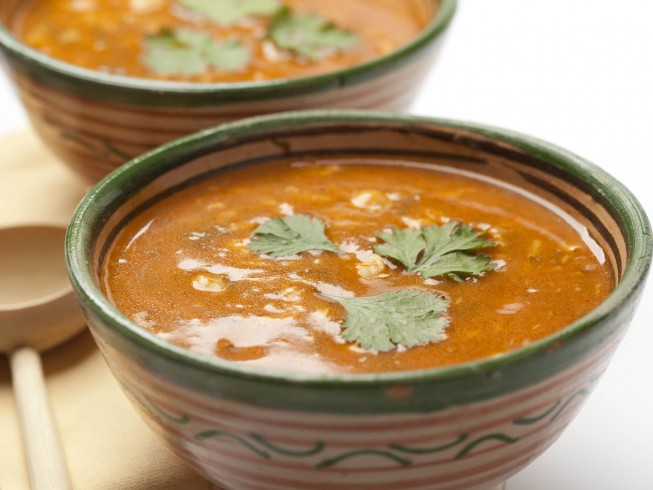

Harira

Description:
Harira is more than just a soup. For most Moroccans, it is centre of the Iftar (Breaking fast) table.
It has almost a cult status and it lives up to the hype. Harira is an amazing tomato soup. It’s a delicious mix of spices and fresh herbs, with vegetables (mainly tomato). You can cook it with or without meat but if you can, use bones and your Harira will be at whole other level !!!
Ingredients
- Beef - Cubed 200 g
- Lentils 100 g
- Chickpeas 100 g
- Shaaria (Thin Pasta) 50 g
- Smmen (Ghee) 2 tsp
- Olive Oil 2 Tbsp
- Salt 1.3 Tbsp
- Pepper 1 tsp
- Ginger 2/3 Tbsp
- Turmeric 1 Tbsp
- Cinnamon 1/4 tsp
- Egg 1
- Flour 50 g
- Tomato Puree 400 g
- Onions 1 Medium
- Parsley 20 g
- Cilantro 20 g
- Bones 3 Small
- Celery 70 g
- Water for base mix 300 ml
- Tomato Paste 40 g
- Water for flour mix 400 ml
- Water Hot 1000 ml
METHOD
- Soak the chickpeas and lentils separately (for 24 hours) the night before.
- Put in the fridge. Remove the skin from the chickpeas and drain the lentils. Reserve.
- Cut the meat into small dices (1cmx1cm). Peel, seed and dice the tomatoes. Set aside.
- Peel the celery stalks, cut them lengthwise. Thinly slice them.
- In a large pot, heat a drizzle of olive oil and add the meat until brown. Add the onions, the celery, the chopped cilantro and parsley and brown for 2 to 3 minutes. Add the diced and crushed tomatoes and the tomato paste, the saffron, the pepper, the chickpeas and the lentils and the stock cube. Stir in the water
- Salt and bring to a boil. Cook over low heat for 1 hour.
- When the harira is cooked, keep it on the heat and add the soup thickener by mixing together the cornstarch with 1 cup of water. Stir constantly and keep the soup simmering.
- Add the vermicelli and cook for another 3 minutes. Adjust the seasoning.
- Final touch, sprinkle a tbsp of fresh chopped cilantro and parsley. Serve hot.